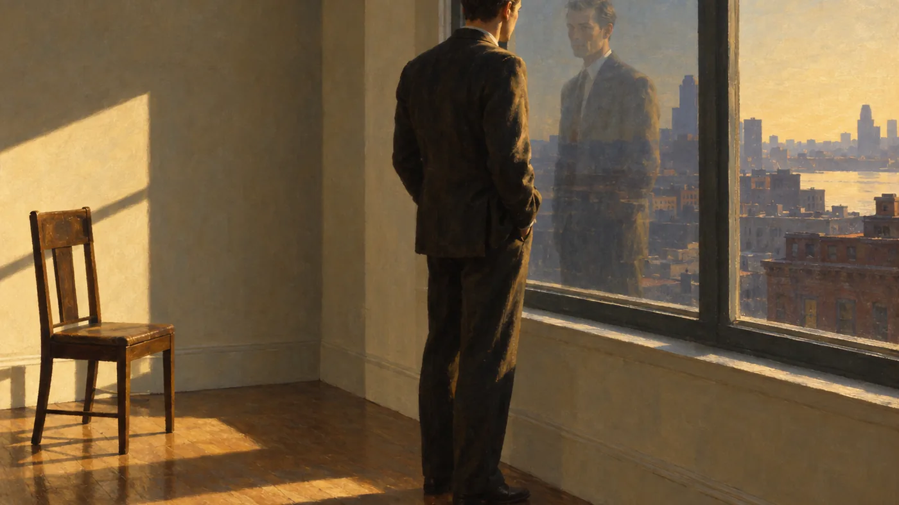

An Essay · On Structure and the Celtic Inheritance
Give Them Unquiet Dreams: A Structural Analysis
Temporal compression, point of view, and the púca in Mulhern’s Kirkus-starred novel — and how these techniques function within the Irish-American tradition.
Listen while you read
Frédéric Chopin, Ballade No. 4 in F minor, Op. 52. Public-domain recording, Musopen / Internet Archive.

I. Introduction
Give Them Unquiet Dreams was named a Kirkus Reviews Best Book of 2019 and received a Kirkus Star, with Kirkus calling it “a luminous, beautifully told fairy tale grounded in history and elevated by spirit”1 and noting its queer coming-of-age dimensions in a feature on independent YA fiction.2 A Readers’ Favorite Book Award winner and Notable Best Indie Book of 2019, the novel has generated a substantial body of study material—including a comprehensive study and a series of craft and folklore essays—that read it for “its structure, its dual Boston and Achill Island geography, and its psychiatric plot.”34
The novel is a first-person paranormal coming-of-age narrative centered on fourteen-year-old Aiden Glencar, growing up in 1970s Irish Catholic Boston, who shares with his institutionalized mother, Laura, an inherited “gift” of second sight.53 This essay examines the structures that organize the book—temporal compression, the management of point of view, and the Celtic folklore of the púca—and then reads those techniques against critical scholarship on inherited memory and silence in Irish-American literature.
II. Temporal Compression: Second Sight as a Narrative Technology
The novel’s central formal problem is access: how does a fourteen-year-old first-person narrator carry a family history spanning “two continents and three generations”3 inside a single voice, without resorting to flashback chapters or an omniscient frame? The answer the novel supplies is the device of second sight. Because Aiden inherits a family gift of perceiving what is hidden—a dead grandfather’s nightly visitations, flashes of others’ thoughts, visions—he can legitimately witness events that both pre-date and exceed his own experience. The site’s craft essay names this a “point-of-view exemption,” a licensed breach of realist access in which Irish folk cosmology, rather than omniscience, admits information the narrator could not otherwise reach: “three generations and two continents of family history” compress into scenes the boy plausibly occupies.6
The compression is not a convenience but the novel’s argument. The comprehensive study observes that in this family “the past is never background,” and that the death of the great-grandmother Sinead—who falls into a well after hearing banshees call—along with the decades of unspoken guilt carried by her daughter Catherine, “are not exposition delivered once and set aside” but recur, “retold in different registers by the grandfather’s ghost and later by Rita in the Public Garden, until the reader understands that for this family, no death is ever fully in the past tense.”3 Geography enacts metaphysics: the narrative moves “constantly between two geographies and three generations”3—rural Ireland, immigrant Boston, and the 1970s present—a two-continent structure that makes, at the level of plot, the same claim the supernatural makes at the level of belief: “nothing is over.”3
The most radical instance of compression is the ending. In a recognition the folklore essay terms an anagnorisis, the adult Aiden discovers—through a sketch his mother left, captioned “Aiden, it’s time to forgive yourself”—that the “ghost” whose apparition, seen by his mother’s second sight, contributed to her being institutionalized was his own future self, perceived across the collapse of time: “I am the ghost.”7 The seeker is revealed as the object of the search, so that past and future fold together and guilt and atonement become the same event. The novel’s final vision of the dead ranged “back to the moment of Creation”7 completes the gesture, dissolving linear time altogether.
III. Point of View: The Doubled Tellers and the Withheld Confession
Though the novel is narrated in the first person, it refuses a single point of view in two ways. First, Aiden narrates from an adult retrospective vantage, so the book runs on “two temporal tracks”: the child’s limited understanding at the time, and the adult’s continuing refusal or inability to explain everything in retrospect.6 The study reads this gap as work rather than accident. The child receives practical instruction from his grandfather’s ghost—“If Laura does something that others think peculiar, you must protect her. Make her actions seem rational”—a charge that converts Aiden from passive witness into “an active manager of his mother’s public presentation,” curating for a hospital and a court which version of his mother’s inner life may be called sane. But the adult narrator’s late confession that he spent years trying “to ignore my second sight, the flashes of intuition, and telepathy” testifies to the cost: decades spent uncertain whether to trust his own perception. The child’s unreliability and the adult’s unresolved doubt are, the study concludes, “the same problem restated at two ages.”3
Second, the novel distributes knowledge across multiple embedded tellers rather than concentrating it in the narrator. Sinead’s death is delivered twice, in two registers: once by the grandfather’s ghost in “compressed, folkloric” terms—“A horse startled her and she fell into a well . . . before, she heard banshees calling out to her”—and once by Rita in the Public Garden in a “more naturalistic retelling,” the pair functioning as “one suited to cosmology and one to reckoning.”3 The púca itself speaks as a hostile interlocutor whose taunts are prophecy; Martin’s flat verdict—“Aiden, she was acting crazy”—voices the modern consensus, while the minor character Margie’s unprompted “I think she sees things that other people don’t” seeds doubt into that consensus from a source with no stake in defending Laura.3
The narration also practices what the craft essay calls the “unreliable confession”: a first-person voice that reports morally or emotionally catastrophic material in flat, procedural diction, withholding affect so that the reader must register the gap between register and gravity.6 Em dashes carry self-interruption and withheld speech, and limited dialogue tags make exchanges feel overheard.6 Aiden’s difficulty finding “the words” to tell even his Nana what he carries—noted in the Readers’ Favorite review—5 is thus rendered formally as much as thematically.
IV. The Púca and the Celtic Folklore Architecture
In Irish tradition the púca (anglicized “pooka,” from the Old Irish púca, possibly cognate with English “puck”) is a shapeshifting spirit, most classically a black horse but also goat, cat, hare, dog, eagle, or human—a trickster associated with Samhain, capable of speech and of prophetic utterance, whose malice in folk accounts is tied to a specific grievance: a field ploughed, a well fouled, a dwelling disturbed.891011 The novel’s critical apparatus insists the figure is not decorative but “the novel’s governing principle—its engine of plot, its key to theme, and the hinge of its ending.”7
Mulhern plants both of the tradition’s load-bearing traits verbatim. The dead grandfather supplies the rulebook in Chapter Two: the púca “may seek revenge on the family. For generations, even,” can “change her form into a variety of animals—a cat, a goat, a horse, even an eagle,” and will “relay veiled messages about your future.”7 The plot then works through that catalogue of forms as a cue-index, scene by scene: the old woman on the bus, the self-named “Moira le Fay” (a fusion of the Greek Moirai and Morgan le Fay), the cat Minnaloushe on the plane—named for Yeats’s own cat—the goat on Achill whose accompanying stopped watch is a time-omen, the eagle whose phantom-driven splinter kills a patient, and finally the horse at the Grand Canyon that kills Laura, the “same golden-eyed intelligence” that killed Sinead at the well. The revenge that began at a disturbed Irish well completes itself in an American canyon.7
The frame is explicitly Yeatsian. The title is lifted from “The Stolen Child” (1889), printed in full at the novel’s close, and the family name, Glencar, is drawn from the poem’s third stanza; in the essay’s phrase, the novel is “the story of what the faeries took from them.”7 Yeats’s “The Lake Isle of Innisfree,” “The Wild Swans at Coole,” “The Cat and the Moon,” and the epitaph’s “Horseman, pass by!” are all woven through, so that the book reads as “a late work of the Celtic Twilight,” complete with Yeats’s own conviction—argued in Fairy and Folk Tales of the Irish Peasantry (1888), The Celtic Twilight (1893), and the essay “Magic” (1901)—that second sight and fairy belief are reality rather than superstition.7
The púca’s structural work is to convert folklore into fate. The grandfather’s definition—“Often, pookas relay veiled messages about your future”—is “the device by which folklore becomes structure”: a prophecy planted early pays off across hundreds of pages, the nonsense refrain on the spirit’s lips (“Raindrops keep falling on my head. Ooh aah”) resolving into the place of death, Ooh Aah Point.7 The ending bends the Oedipal script toward a mitigated consolation, keyed to the novel’s Einstein epigraph: where Oedipus’s self-blinding is pure loss, Aiden’s cracked glasses are “not only a wound but a correction,” breaking the illusion that the dead are gone and that the guilt was real.7
V. Inherited Memory and Silence
The novel’s thematic center is inheritance—a form of memory that passes through blood and silence rather than through records. The comprehensive study’s reading of the title holds that, after a full engagement, it “reads less like a curse than like an inheritance the Glencar family has decided to accept rather than refuse”: a quiet dream would be one “undisturbed by the dead, by inherited guilt,” and the withholding of that peace is finally fidelity rather than tragedy.3 The argument that guilt is inherited is made structurally rather than stated: Catherine carries her mother’s death as “unspoken guilt for decades, crosses an ocean without resolving it, and dies without fully unburdening herself of it,” leaving Aiden—who never met Sinead—to inherit the obligation of closing the account, delivering Catherine’s gratitude to Rita after Catherine’s own death. “Family guilt does not expire with the generation that incurred it; it is simply handed forward, disguised as inheritance, folklore, or a boy’s strange gift.”3
Silence is the medium of that inheritance. Laura’s visions are silenced by diagnosis—only she, of the two who share the gift, is institutionalized, because an adult woman’s version “disrupts a marriage, a household” and draws the attention of a system built to pathologize exactly that disruption.3 Aiden’s protective performance is itself translation between a person’s reality and “what power is willing to accept as real.”3 Formally, the text withholds in ways that mirror the family’s withholding: the author site describes the novel as one of “haunted families, inherited silences,”17 and the craft essay names among its governing concerns “the ethics of unauthorized confession: who is granted the authority to hear what cannot otherwise be said, and what that authority costs the listener.”6
VI. Comparative Analysis: Irish-American Literature
Mulhern’s techniques are legible within a long Irish-American and Irish-diasporic tradition organized around the transmission of memory and the management of silence. Three clusters of scholarship illuminate the comparison.
Communal memory and narratability. Beth O’Leary Anish’s dissertation Writing Irish America: Communal Memory and the Narrative of Nation in Diaspora (University of Rhode Island, 2017)—developed alongside her book Irish American Fiction from World War II to JFK: Anxiety, Assimilation, and Activism—argues that the Irish-American narrative is told “about a partly remembered and partly imagined homeland,” in which “symbol has replaced substance,” protecting the community from memories of colonialism, emigration, poverty, and hunger.1213 Drawing on Maurice Halbwachs’s communal memory, Paul Ricoeur’s narrative identity, and Pierre Nora’s “sites of memory,” Anish argues that emigration severed the Irish from the people and places that made recollection possible, leaving a state she calls “collective aphasia”—“a failure to narrate how families moved from being Irish to being American.”12 The Glencar family is a fictional instance of exactly this condition: a family that cannot narrate its own transition, separated from its origin by a well and an ocean, whose story survives only in fragments handed down as folklore and guilt.
Silence and inherited trauma. Anish also applies transgenerational frameworks—Cathy Caruth’s belated trauma, Marianne Hirsch’s “postmemory,” and Gabriele Schwab’s account of children as readers of traumatic silences—to show that trauma passes “not only through explicit stories but through silences, withheld information, moods, habits.”12 Michael McAteer’s edited collection Silence in Modern Irish Literature (2017) likewise treats silence as an active state in twentieth-century Irish writing rather than a mere absence, offering “the anatomy of silence” across a wide range of authors.14 Mulhern’s novel belongs to this family of concerns: Aiden reads the family’s grief through embodied, unwilled channels—a grandmother’s “restless feeling of guilt,” a mother’s visions, a dead grandfather’s visitations.7 Christopher Cusack’s work on Famine memory and diasporic identity further cautions that the customary claim of “a deep-rooted silence in Irish literature” about the Famine “is now seldom repeated” without qualification—a reminder not to reduce the novel’s specific silences to a single historical cause.15
Temporal compression and polytemporality. The novel’s folding of past into present has a named contemporary analogue. Juan José Martín González reads Colum McCann’s TransAtlantic (2013) as a “polytemporal” novel whose image of “the taut elastic of time” challenges linear history by presenting past events as “dynamically connected with present and future orientations,” leaping across a century and an ocean between discrete narrated stories.16 Where McCann distributes two continents across separate story-threads, Mulhern compresses the same two continents and three generations into the continuous consciousness of a single seer—McCann’s elasticity turned inward. Kirkus reads the result as “a fairy tale grounded in history,”1 and the cartography essay places Mulhern alongside Alice McDermott’s family chronicles, William Kennedy’s ghost-haunted Albany, and William Trevor’s tragedies of overlooked lives—writers for whom the dead do not stay buried and the past does not stay past.4
The comparative point is shared method rather than influence. Irish-American fiction repeatedly solves the same formal problem Mulhern solves—making inherited, uninterrogated history legible in the present—and its solutions cluster around the same devices: the doubled generation, the resonant object, the withheld story, and the permeable boundary between the living and the dead. What is distinctive in Mulhern is the degree to which he collates these devices and then literalizes them: the resonant object (a family Bible, a photograph album) becomes a living ghost; the withheld story becomes a first-person narration that itself withholds; and the permeable boundary between living and dead becomes not atmospheric convention but the mechanical engine of the plot, in the form of a shapeshifting, prophesying púca who is at once memory, guilt, and fate.76
VII. Conclusion
Give Them Unquiet Dreams converts its folkloric inheritance into narrative method. Temporal compression, managed through the “point-of-view exemption” of second sight, folds two continents and three generations into a single first-person consciousness; a doubled narrator and a set of embedded tellers distribute knowledge across registers that neither confirm nor debunk the family’s vision; and the púca, drawn faithfully from Yeatsian and folkloric sources, operates as the book’s engine of plot and theme, externalizing inherited guilt until the protagonist recognizes himself as the ghost he has pursued. Read within the Irish-American tradition mapped by scholarship on communal memory, silence, and transgenerational trauma, the novel emerges as a deliberate treatment of a question that tradition has asked for a century: how the unspoken past—memory, guilt, and the dead—is carried forward, and at what cost. The answer is structural before it is thematic: for this family, nothing is ever fully in the past tense.3
— Silver Current Press
Notes
- 1. Kirkus Reviews, “Give Them Unquiet Dreams,” kirkusreviews.com. ↩
- 2. Kirkus Reviews, “Queer Adventures in Indieland,” kirkusreviews.com. ↩
- 3. “Give Them Unquiet Dreams: A Comprehensive Study,” On This Site (Give Them Unquiet Dreams: A Comprehensive Study). ↩
- 4. “The Quiet Cartographer of Irish-American Memory,” On This Site (The Quiet Cartographer of Irish-American Memory). ↩
- 5. Jack Magnus, “Book Review of Give Them Unquiet Dreams,” Readers’ Favorite (July 30, 2019), readersfavorite.com. ↩
- 6. “The Architecture of Attention: Craft, Motif, Theme,” On This Site (The Architecture of Attention). ↩
- 7. “The Pooka’s Revenge: Shapeshifting, Guilt, and the Oedipal Recognition,” On This Site (The Pooka’s Revenge). ↩
- 8. “Púca,” Wikipedia, en.wikipedia.org. ↩
- 9. “Púca Origins,” IrishMyths.com (2022), irishmyths.com. ↩
- 10. “The Pooka,” Ask About Ireland, askaboutireland.ie. ↩
- 11. “The Irish Legend of the Pooka,” IrishCentral, irishcentral.com. ↩
- 12. Beth O’Leary Anish, “Writing Irish America: Communal Memory and the Narrative of Nation in Diaspora” (PhD diss., University of Rhode Island, 2017), digitalcommons.uri.edu. ↩
- 13. Beth O’Leary Anish, Irish American Fiction from World War II to JFK: Anxiety, Assimilation, and Activism, reviewed in MELUS 47, no. 3 (2022), academic.oup.com. ↩
- 14. Michael McAteer, ed., Silence in Modern Irish Literature (2017), reviewed in Project MUSE, muse.jhu.edu. ↩
- 15. Christopher Cusack, “Famine Memory and Diasporic Identity in US Periodical Fiction, 1891–1918,” repository.ubn.ru.nl. ↩
- 16. Juan José Martín González, “‘The Taut Elastic of Time’: Polytemporality and the Black and Green Atlantic in Colum McCann’s TransAtlantic (2013),” ES Review 46 (2025): 280–304, revistas.uva.es. ↩
- 17. James Mulhern, author-site homepage, authorjamesmulhern.com. ↩
Works Quoted
All quotations from the novel are drawn from Give Them Unquiet Dreams (Kurti Publishing, 2019), checked verbatim against the published text, with chapter citations given in the companion essays on this site. The folklore background on the púca reflects the standard Irish tradition recorded in collections from Thomas Crofton Croker and Lady Wilde to modern scholarship on the Irish supernatural; the discussion of temporal compression engages Colum McCann’s TransAtlantic and the polytemporality scholarship it has attracted; and the reading of inherited memory and silence draws on the critical tradition running from Silence in Modern Irish Literature through Beth O’Leary Anish’s account of communal memory in the diaspora. The comparison is offered as lineage and shared method, not as a claim of equivalence.
Related essays on this site: The Pooka’s Revenge reads the shapeshifting spirit as the novel’s governing principle; Give Them Unquiet Dreams: A Comprehensive Study surveys the novel as a whole; Second Sight as Narrative Technology treats the gift as a craft device; Second Sight Against the Celtic Twilight reads it against Yeats; The Unreliable Confession examines the withheld-affect register; and The Quiet Cartographer of Irish-American Memory situates the novel within the Irish-American tradition.
Every passage quoted here has been checked verbatim against its published source. Where the connection is inference rather than direct quotation, that is said plainly rather than implied.